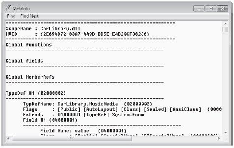

The ability to fully describe types (classes, interfaces, structures, enumerations, and delegates) using metadata is a key element of the .NET platform. Numerous .NET technologies, such as object serialization, .NET remoting, XML web services, and Windows Communication Foundation (WCF), require the ability to discover the format of types at runtime. Furthermore, cross-language interoperability, numerous compiler services, and an IDE’s IntelliSense capabilities all rely on a concrete description of type.
Regardless of (or perhaps due to) its importance, metadata is not a new idea supplied by the .NET Framework. Java, CORBA, and COM all have similar concepts. For example, COM type libraries (which are little more than compiled IDL code) are used to describe the types contained within a COM server. Like COM, .NET code libraries also support type metadata. Of course, .NET metadata has no syntactic similarities to COM IDL.
Recall that the ildasm.exe utility allows you to view an assembly’s type metadata using the Ctrl+M keyboard option (see Chapter 1). Thus, if you were to open any of the *.dll or *.exe assemblies created over the course of this book (such as the CarLibrary.dll created in the previous chapter) using ildasm.exe and press Ctrl+M, you would find the relevant type metadata (see Figure 15-1).
Figure 15-1 Viewing an assembly’s metadata using ildasm.exe
As you can see, ildasm.exe’s display of .NET type metadata is very verbose (the actual binary format is much more compact). In fact, if I were to list the entire metadata description representing the CarLibrary.dll assembly, it would span several pages. Given that this act would be a woeful waste of paper, let’s just glimpse into some key metadata descriptions of the CarLibrary.dll assembly.
Note Don’t be too concerned with the exact syntax of each and every piece of .NET metadata in the next few sections. The bigger point to absorb is that .NET metadata is very descriptive and lists each internally defined (and externally referenced) type found within a given code base.
Each type defined within the current assembly is documented using a TypeDef #n token (where TypeDef is short for type definition). If the type being described uses a type defined within a separate .NET assembly, the referenced type is documented using a TypeRef #n token (where TypeRef is short for type reference). A TypeRef token is a pointer (if you will) to the referenced type’s full metadata definition in an external assembly. In a nutshell, .NET metadata is a set of tables that clearly mark all type definitions (TypeDefs) and referenced types (TypeRefs), all of which can be viewed using ildasm.exe’s metadata window.
As far as CarLibrary.dll goes, one TypeDef is the metadata description of the CarLibrary.EngineState enumeration (your number may differ; TypeDef numbering is based on the order in which the C# compiler processes the file):
TypeDef #2 (02000003)
-------------------------------------------------------
TypDefName: CarLibrary.EngineState (02000003)
Flags : [Public] [AutoLayout] [Class] [Sealed] [AnsiClass] (00000101)
Extends : 01000001 [TypeRef] System.Enum
Field #1 (04000006)
-------------------------------------------------------
Field Name: value__ (04000006)
Flags : [Public] [SpecialName] [RTSpecialName] (00000606)
CallCnvntn: [FIELD]
Field type: I4
Field #2 (04000007)
-------------------------------------------------------
Field Name: engineAlive (04000007)
Flags : [Public] [Static] [Literal] [HasDefault] (00008056)
DefltValue: (I4) 0
CallCnvntn: [FIELD]
Field type: ValueClass CarLibrary.EngineState
...
Here, the TypDefName token is used to establish the name of the given type, which in this case is the custom CarLibrary.EngineState enum. The Extends metadata token is used to document the base type of a given .NET type (in this case, the referenced type, System.Enum). Each field of an enumeration is marked using the Field #n token. For brevity, I have simply listed the metadata for CarLibrary.EngineState.engineAlive.
Here is a partial dump of the Car class that illustrates the following:
TypeDef #3 (02000004)
-------------------------------------------------------
TypDefName: CarLibrary.Car (02000004)
Flags : [Public] [AutoLayout] [Class] [Abstract]
[AnsiClass] [BeforeFieldInit] (00100081)
Extends : 01000002 [TypeRef] System.Object
...
Field #2 (0400000a)
-------------------------------------------------------
Field Name: <PetName>k__BackingField (0400000A)
Flags : [Private] (00000001)
CallCnvntn: [FIELD]
Field type: String
...
Method #1 (06000001)
-------------------------------------------------------
MethodName: get_PetName (06000001)
Flags : [Public] [HideBySig] [ReuseSlot] [SpecialName] (00000886)
RVA : 0x000020d0
ImplFlags : [IL] [Managed] (00000000)
CallCnvntn: [DEFAULT]
hasThis
ReturnType: String
No arguments.
...
Method #2 (06000002)
-------------------------------------------------------
MethodName: set_PetName (06000002)
Flags : [Public] [HideBySig] [ReuseSlot] [SpecialName] (00000886)
RVA : 0x000020e7
ImplFlags : [IL] [Managed] (00000000)
CallCnvntn: [DEFAULT]
hasThis
ReturnType: Void
1 Arguments
Argument #1: String
1 Parameters
(1) ParamToken : (08000001) Name : value flags: [none] (00000000)
...
Property #1 (17000001)
-------------------------------------------------------
Prop.Name : PetName (17000001)
Flags : [none] (00000000)
CallCnvntn: [PROPERTY]
hasThis
ReturnType: String
No arguments.
DefltValue:
Setter : (06000002) set_PetName
Getter : (06000001) get_PetName
0 Others
...
First, note that the Car class metadata marks the type’s base class (System.Object) and includes various flags that describe how this type was constructed (e.g., [Public], [Abstract], and whatnot). Methods (such as our Car’s constructor) are described in regard to their parameters, return value, and name.
Note how an automatic property results in a compiler generated private backing field (which was named <PetName>k__BackingField) and two compiler generated methods (in the case of a read/write property) named in this example, get_PetName() and set_PetName(). Finally, the actual property itself is mapped to the internal get/set methods using the .NET metadata Getter/Setter tokens.
Recall that an assembly’s metadata will describe not only the set of internal types (Car, EngineState, etc.), but also any external types the internal types reference. For example, given that CarLibrary.dll has defined two enumerations, you find a TypeRef block for the System.Enum type:
TypeRef #1 (01000001) ------------------------------------------------------- Token: 0x01000001 ResolutionScope: 0x23000001 TypeRefName: System.Enum
The ildasm.exe metadata window also allows you to view the .NET metadata that describes the assembly itself using the Assembly token. As you can see from the following (partial) listing, information documented within the Assembly table is (surprise, surprise!) the same information that can be viewable via the MANIFEST icon. The following is a partial dump of the manifest of CarLibrary.dll (version 2.0.0.0):
Assembly
-------------------------------------------------------
Token: 0x20000001
Name : CarLibrary
Public Key : 00 24 00 00 04 80 00 00 // Etc...
Hash Algorithm : 0x00008004
Major Version: 0x00000002
Minor Version: 0x00000000
Build Number: 0x00000000
Revision Number: 0x00000000
Locale: <null>
Flags : [PublicKey] ...
In addition to the Assembly token and the set of TypeDef and TypeRef blocks, .NET metadata also makes use of AssemblyRef #n tokens to document each external assembly. Given that the CarLibrary.dll makes use of the System.Windows.Forms.MessageBox class, you find an AssemblyRef for the System.Windows.Forms assembly, as shown in the following code:
AssemblyRef #2 (23000002)
-------------------------------------------------------
Token: 0x23000002
Public Key or Token: b7 7a 5c 56 19 34 e0 89
Name: System.Windows.Forms
Version: 4.0.0.0
Major Version: 0x00000004
Minor Version: 0x00000000
Build Number: 0x00000000
Revision Number: 0x00000000
Locale: <null>
HashValue Blob:
Flags: [none] (00000000)
The final point of interest regarding .NET metadata is the fact that each and every string literal in your code base is documented under the User Strings token.
User Strings
-------------------------------------------------------
70000001 : (11) L"Jamming {0}"
70000019 : (13) L"Quiet time..."
70000035 : (23) L"CarLibrary Version 2.0!"
70000065 : (14) L"Ramming speed!"
70000083 : (19) L"Faster is better..."
700000ab : (16) L"Time to call AAA"
700000cd : (16) L"Your car is dead"
Note As illustrated in this last metadata listing, always be aware that all strings are clearly documented in the assembly metadata. This could have huge security consequences if you were to use string literals to capture passwords, credit card numbers, or other sensitive information.
The next question on your mind may be (in the best-case scenario) “How can I leverage this information in my applications?” or (in the worst-case scenario) “Why should I care about metadata?” To address both points of view, allow me to introduce .NET reflection services. Be aware that the usefulness of the topics presented over the pages that follow may be a bit of a head-scratcher until this chapter’s endgame. So hang tight.
Note You will also find a number of CustomAttribute tokens displayed by the MetaInfo window, which documents the attributes applied within the code base. You’ll learn about the role of .NET attributes later in this chapter.